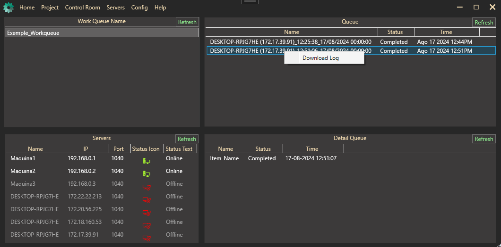
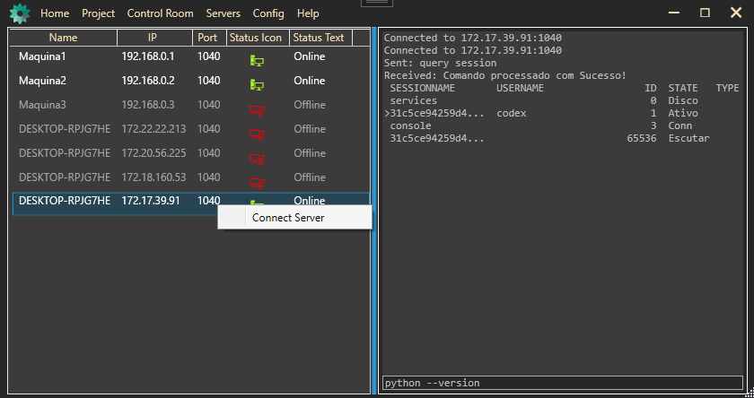
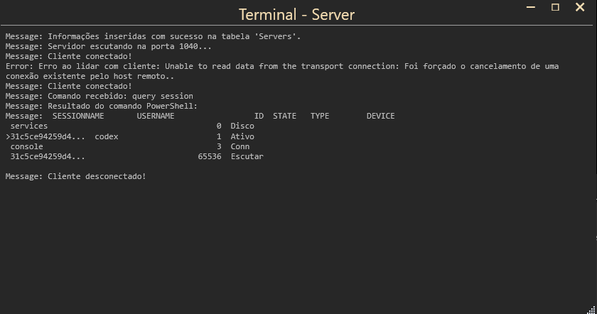

Getting Started with PyPA
Before diving into PyPA, make sure to set up your environment:
-
Install SQL Server
- Follow this guide to install SQL Server, which is necessary for managing your databases.
-
Create a Local Database
- Set up a local database to store your application data. This step is crucial for using PyPA effectively.
Note: Completing these steps will make the database accessible to other machines on the same VPN.
If you only need to provide access to a database on the same network, follow the instructions in Connecting to a Database.
Using the Projects
The Projects button in the application bar provides access to several key features:
-
Visual Studio Code
- Open Visual Studio Code to write and edit your automation scripts with a powerful code editor.
-
Repository
- Access the repository where all your created projects and scripts are stored and managed.
-
Run Code (Python)
- Execute your scripts directly from the application to test and deploy your automations.
-
draw.io
- Use draw.io to create and visualize diagrams and flowcharts for your automation processes.
-
Ryven
- For a no-code solution, use Ryven, a visual programming tool for Python that offers a graphical interface for creating and running scripts.
Using the Control Room
The Control Room is your central hub for monitoring and managing all active machines in your environment. It provides a clear overview of each machine's name, current execution status, and the time of execution.
With the Control Room, you can:
- Monitor the real-time status of all running machines.
- Access detailed logs of each machine's execution, allowing you to trace and diagnose any issues that arise during the process.
- Download execution logs for further analysis and record-keeping, ensuring that you have a complete history of operations.
This tool is essential for maintaining the efficiency and reliability of your automated processes, giving you the visibility and control needed to manage your environment effectively.

Managing Servers
The Servers section provides a suite of powerful tools to manage and monitor your machines effectively. Through the View Server feature, you can get a real-time overview of your servers, allowing you to easily identify which ones are online or offline. This is crucial for ensuring that your services are running smoothly and efficiently.
Beyond monitoring, you can send commands directly to the servers, enabling you to install software, check file integrity, and perform various administrative tasks. These operations are seamlessly executed using the built-in command prompt interface, giving you the flexibility to execute custom commands and manage your servers remotely.
These capabilities make it easier to maintain control over your network, automate routine tasks, and ensure that your infrastructure is operating at peak performance.


The Create Server feature allows you to generate an executable file that, when run on a machine within the same network, makes it open to receiving commands and executing processes via the scheduler. This is particularly useful for automating tasks and managing distributed systems without manual intervention.
Note: The machine must be pre-configured with Python installed to execute scripts that the scheduler will point to at the scheduled times.
By preparing the server with the necessary software and configurations, you can ensure that it is ready to handle automated tasks, respond to commands, and maintain continuous operation within your network. This proactive setup minimizes downtime and streamlines the management of your server infrastructure.
Configurations
The Configurations section provides essential tools to set up and manage your application's environment effectively. Within this section, you'll find several key features:
-
Database
- The Database option allows you to install SQL Server, create a local database on your machine (localhost), and establish connections to external databases. This is the foundation for managing and storing the data that your application will utilize.
-
Work Queue
- The Work Queue feature enables you to create and manage work queues, which are essential for organizing and controlling the execution of various processes. These queues can later be monitored in the Control Room and scheduled for execution using the Scheduler tool. This ensures that all tasks are efficiently managed and executed in a timely manner.
-
Security
- The Security section is where you can store and manage encrypted passwords within the database. These encrypted credentials are securely maintained and can be used in automated processes, ensuring that your application's operations are both secure and efficient.
-
Scheduler
- The Scheduler is a powerful tool that allows you to create detailed schedules for process execution across your server machines. You can schedule tasks to run at specific times, down to the hour, minute, and second, as well as on specific days, months, and years. This level of granularity ensures that your processes are executed precisely when needed, optimizing the performance and reliability of your operations.